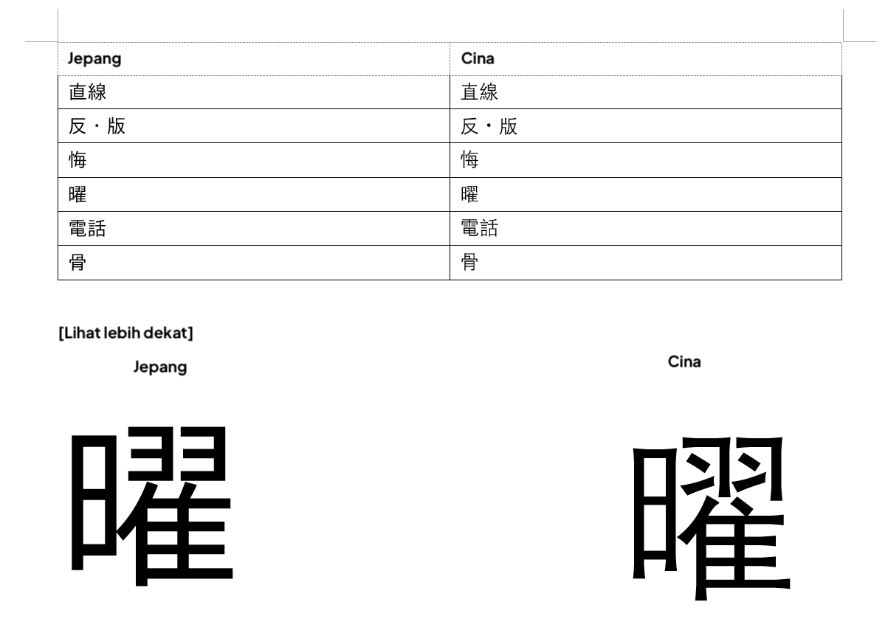
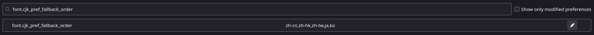

Apakah kamu sudah pakai font yang benar?¶
Perhatian (klik di sini)
-
Panduan ini adalah terjemahan dari TheMoeWay dengan beberapa pengubahan referensi dan lokalisasi sumber Bahasa Indonesia
-
Jika kamu bisa bahasa inggris, kamu bisa kunjungi panduan di sana

Secara default, komputer / HP kamu biasanya bakal nampilin kanji pakai font China. Kanji Jepang itu bentuknya sedikit beda, dan bisa jadi masalah kalau kamu kebiasaan lihat bentuk kanji versi China, bukan versi Jepangnya.
Cara cek apakah browser kamu udah pakai font Jepang
Salah satu karakter yang kelihatan banget bedanya antara font Jepang dan China adalah 直 yang dipakai di kata 直す (naosu) yang artinya menyembuhkan, memperbaiki, membetulkan.


Kalau 直 kamu bentuknya kayak gambar kedua, selamat! Berarti kamu udah pakai font Jepang. Kalau belum, ganti font kamu.
Windows 10¶
Tekan Win+I buat buka Settings > System > Optional features > Add a feature > Cari "Japanese supplemental fonts" terus Install
Buat yang mau cara advanced: Powershell
Font Jepang juga bisa diinstal lewat Windows Powershell (Administrator):
Get-WindowsCapability -Online -Name Language.Fonts.Jpan~~~und-JPAN* | Add-WindowsCapability -Online
Kamu juga punya Chinese supplemental fonts?
Kamu harus ubah locale ke Japanese (Japan).
Cara ganti locale ke Jepang
- Buka kotak dialog Run dengan Win+R
- Ketik
intl.cpllalu tekan Enter - Klik tab Administrative, pilih Change system locale..., terus pilih Japanese (Japan) lalu klik OK.
Kalau kamu pakai browser berbasis Chromium (contoh: Google Chrome, Brave, Thorium), buka Menu > Settings > klik Appearance/Content (Brave) di kiri > Customize fonts.
Atur kayak gini:
- Standard font: Meiryo UI
- Serif font: Yu Mincho
- Sans-serif font: Meiryo
- Monospace: MS Gothic
Kalau pakai Firefox, biasanya udah otomatis diatur.
macOS¶
Cukup tambahin bahasa Jepang sebagai bahasa preferensi di System Preferences.
> System Preferences > Language & Region > General > Add a language > pilih Japanese 日本語
Linux¶
Kamu harus punya ja_JP.UTF-8 sebagai salah satu locale. Kalau belum ada, hilangkan tanda komentar di baris #ja_JP.UTF-8 UTF-8 dalam file /etc/locale.gen lalu jalankan:
sudo locale-gen
Sekarang pasang paket noto-fonts-cjk. Paket ini tersedia di repositori resmi Arch dan sudah dikenal bisa otomatis mengatur aturan fontconfig yang diperlukan ketika diinstal di Arch.
Kalau ada bagian dari proses di atas yang nggak cocok buat kamu (misalnya distro beda, font beda, cara instalasi beda), fontconfig bisa jadi sudah atau belum diatur dengan benar.
Kalau nggak tahu cara cek, bikin aja file baru berisi aturan fontconfig yang diperlukan di direktori ~/.config/fontconfig/conf.d (buat direktori ini kalau belum ada) khusus untuk teks Jepang. Kamu bisa pakai bagian ini dari Arch Wiki atau file contoh config yang keren ini dari tatsumoto-ren sebagai referensi.
Catatan¶
Browser¶
Chromium-based¶
Kadang font China masih aja muncul walaupun setting udah bener (entah kenapa), jadi kamu mungkin harus maksa ganti dengan cara ini:
> Settings > klik Appearance di sebelah kiri > Customize fonts
Standard font: Noto Sans CJK JP Regular
Serif font: Noto Serif CJK JP Regular
Sans-serif font: Noto Sans CJK JP Regular
Firefox¶
Kalau Firefox nggak diset salah satu bahasanya ke Jepang atau halaman web (atau sebagian halamannya) nggak secara eksplisit nyantumin lang="ja", biasanya dia bakal fallback ke font China. Ini karena font China umumnya punya cakupan karakter lebih lengkap.
Biar nggak begitu, lakukan ini:
- Buka tab baru ke
about:config - Lewati halaman peringatan (kalau muncul)
- Cari
font.cjk_pref_fallback_order - Pindahkan
jake posisi paling depan di value tersebut
Koma penting banget
Koma ini memisahkan kode bahasa di value itu, jangan sampai kehapus.
Sebelum: 
Sesudah:

Android¶
Cukup tambahkan bahasa Jepang (tulisannya 日本語) sebagai bahasa kedua, ini nggak bakal bikin bahasa tampilan berubah kecuali kamu geser ke urutan teratas.

iOS¶
Tambahin keyboard Jepang (boleh kana atau romaji, terserah yang nyaman) udah cukup.
Anki¶
Menurutku font China di kartu Anki paling parah tampilannya, soalnya kana bisa jadi pake sans-serif sementara kanji pake serif, terus ukurannya nggak proporsional, DAN tampilannya ala China, jadinya aneh banget.

Kalau font Jepang udah diinstal di sistem, harusnya Anki otomatis pakai font Jepang. Kalau nggak, kamu bisa paksa ganti.
Paksa font Jepang di Anki¶
IPAex Gothic adalah font sans-serif Jepang yang bagus dan aku rekomendasiin buat Anki. Bisa diunduh di sini.
Instal font-nya di sistem lalu restart.
Windows: Klik dua kali dan pilih Install
macOS: Seret font ke Font Book
Linux: Pindahkan file ke ~/.local/share/fonts/ lalu jalankan fc-cache -f -v
Sekarang di Anki klik "Add", lalu "Cards", lalu "Styling" dan atur font-family sesuai font yang dipasang.
.card {
font-family: IPAexGothic; /* di sini font diset */
}
Kamu juga bisa ganti font dengan cara taruh font tersebut ke dalam direktori collection.media di Anki.
Windows: C:\\Users\\<user>\\AppData\\Roaming\\Anki2\\(profile)\\collection.media
macOS: ~/Library/Application Support/Anki2/(profile)/collection.media
Linux: ~/.local/share/Anki2/(profile)/collection.media
Android: /storage/emulated/0/AnkiDroid/collection.media
Sekarang di Anki klik "Add" lalu klik "Cards" lalu "Styling" dan ubah font family sesuai yang kamu mau.
Jangan copas persis!
Tambahkan aja yang belum ada di setting kamu.
.card {
font-family: CustomFont; /* ini tempat kamu set font */
@font-face {
\tfont-family: CustomFont; src: url('ipaexg.ttf'); } /* ini tempat kamu define font */
}
Preview:


Sekarang ganti juga font untuk editor di Anki. Klik "Add" lalu "Fields" dan ganti Editing font di setiap field ke salah satu dari ini (atau font Jepang lain yang kamu tahu):
IPAexGothic
Meiryo
MS Gothic
Yu Gothic
Hiragino Kaku Gothic Pro
Noto Sans CJK JP Regular
Yomitan¶
Font di Yomitan seharusnya ngikut font browser kamu, tapi kalau nggak, kamu bisa paksa pakai font Jepang.
Pakai Popup CSS...
.kanji-link {
font-family: IPAexGothic;
}
.source-text {
font-family: IPAexGothic;
}
.gloss-content {
font-family: IPAexGothic;
}
.tag-label-content {
font-family: IPAexGothic;
}